Everett, MA
Raphael
Lemus Solis
Mechanical Engineering major, Physics minor at Tufts University.
I design, model, and build physical systems - from a motorized lift-robot to a sand-cast sundial - and like projects that move between CAD, the shop, and testing in the same week.
Spec Sheet
About
I'm a senior at Tufts University studying mechanical engineering with a physics minor. My coursework runs through thermal-fluid systems, materials and manufacturing, mechanics, and controls, and outside of class I've built everything from a load-lifting robot to a hand-fabricated sundial. In summer 2024 I spent a month at the University of Tübingen studying sustainability and AI policy while picking up German.
- Languages & culture
- Video games
- Space
- Reading
Projects
Coursework projects spanning controls, CAD, manufacturing, and mechanics.
Car Robot
Electronics & Controls I
Designed and built a car-style robot able to lift varying loads off a table. Wrote the control logic that regulated motor speed and steering, then tested and debugged the electrical and control systems to improve reliability.
Desk Add-Ons
Engineering Design I
Designed an attachable, detachable desk cabinet built around a push-to-close mechanism, a ratchet system for effortless height adjustment, and a shopping-cart-style handle for mobility - starting from user-centered design research and ending in full SolidWorks models and drawings.
Sundial Coat Hanger
Materials & Manufacturing I
Fabricated a working sundial coat hanger using sand-casting, then built an FEA model to find the material's maximum tensile strength - carrying the project from concept to finished prototype inside a one-month deadline.
ME20 - Statics ▶
Truss Project - Howe Truss ▶
WITH BREOGHAN CONCHAS MARQUEZ
Breoghan and I designed and built a small plastic Howe truss, then predicted every support reaction and member force by hand and checked them against a physical test, an online truss calculator, and our own MATLAB code.
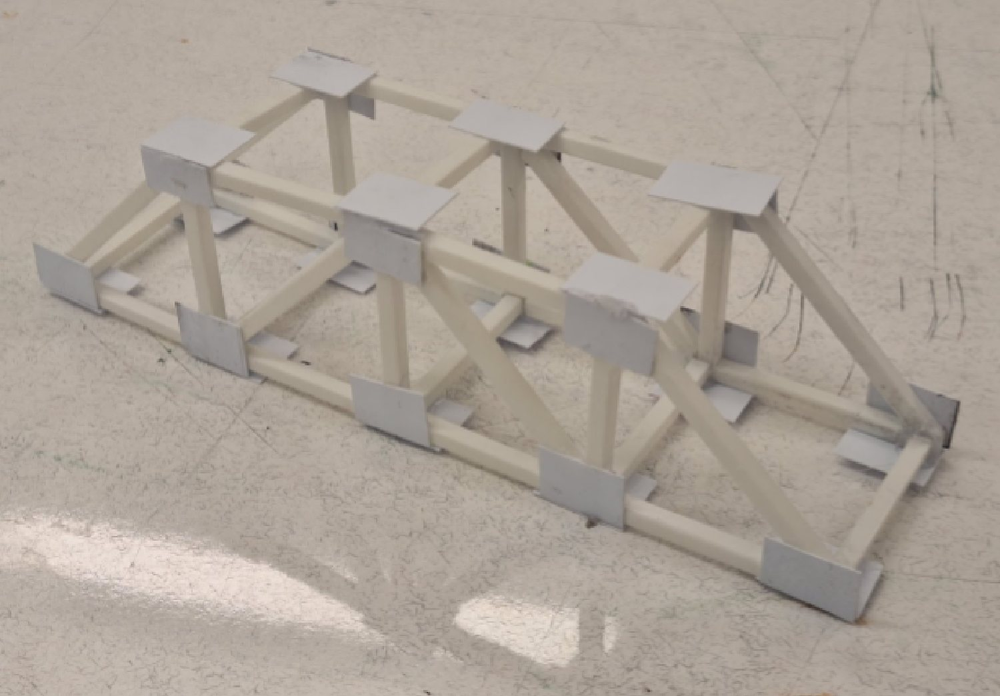
With 8 joints, 13 members, and 3 reactions (a pin at A and a roller at E), the truss satisfies 2M = N + R, so it is statically determinate. Every angle is 45° or 90°, with four 0.046 m panels for a 0.184 m span.
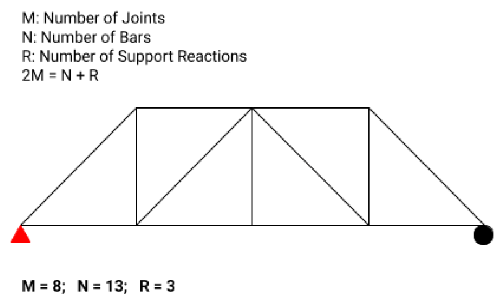
We tested two loading conditions: a single 200 g mass at the first panel point, and 50 g plus 100 g masses at two interior panel points. Setting the truss on a digital scale under each support let us measure the reactions directly.
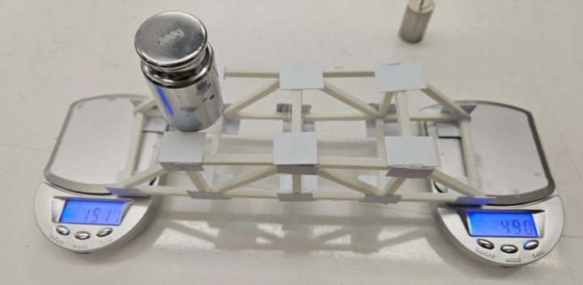
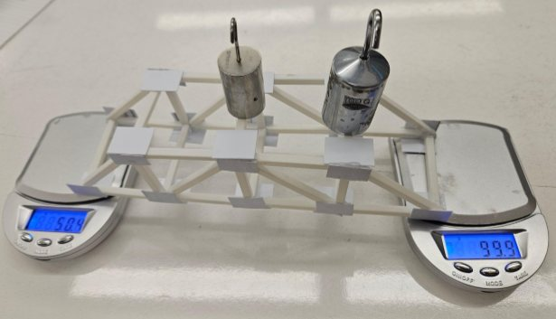
| Condition | Ay theory | Ay measured | Ey theory | Ey measured |
|---|---|---|---|---|
| 1 - 200 g | 1.47 | 1.481 | 0.49 | 0.480 |
| 2 - 50 g + 100 g | 0.490 | 0.490 | 0.981 | 0.979 |
The measurements landed within about 0.01 N of theory, showing the truss was built true to our assumptions. Solving the method of joints by hand, every member force matched the online calculator with 0% error, and our MATLAB code agreed on the members we checked. Condition 1 had one zero-force member (GC); condition 2 had three (FD, FC, and GC).
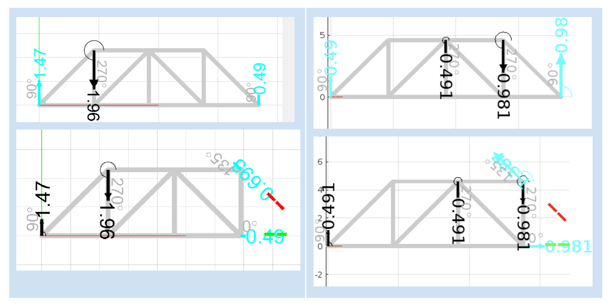
The project showed us why triangles make trusses such a sturdy bridge form, and why it's worth double-checking calculations with more than one tool before trusting a design with people's safety.
Full report: PDF
Final Project - Fixed-Fixed Beam ▶
This project analyzed a hollow tube fixed at both ends with a point load at midspan, solving it by hand and comparing the results with FEA from the ME10 lab. With four unknown reactions and only three equilibrium equations, the beam is statically indeterminate, so the problem took a few more steps than usual.
Using superposition, we removed the redundant moment and force at B, treated the beam as a cantilever, and required the total slope and deflection at the fixed end to be zero. That gave reactions of F/2 at each end and end moments of ±FL/8.
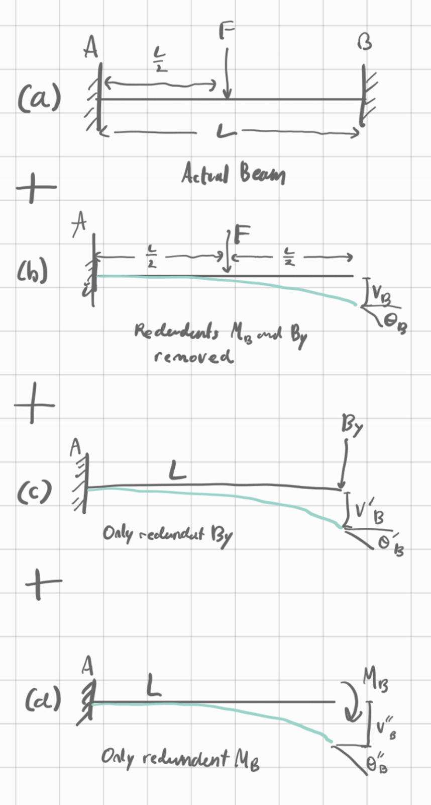
Integrating the moment equations twice, with zero slope and deflection at both walls and a continuity check at midspan, gave the deflection curve. For a 25 mm outer, 17 mm inner diameter tube, L = 0.77 m, F = 1300 N, and E = 210 GPa, the maximum stress and deflection both occur at midspan.
| Quantity | Hand calc | FEA |
|---|---|---|
| Max normal stress | 103.75 MPa | 88.5 MPa |
| Max deflection | -0.976 mm | -0.88 to -0.91 mm |
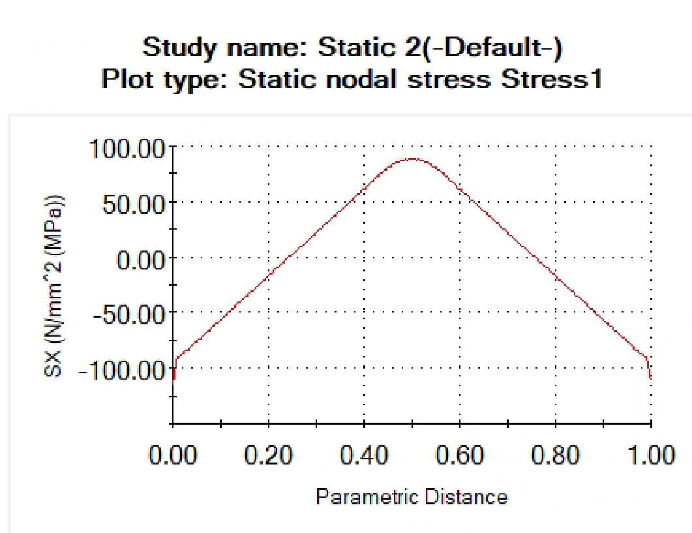
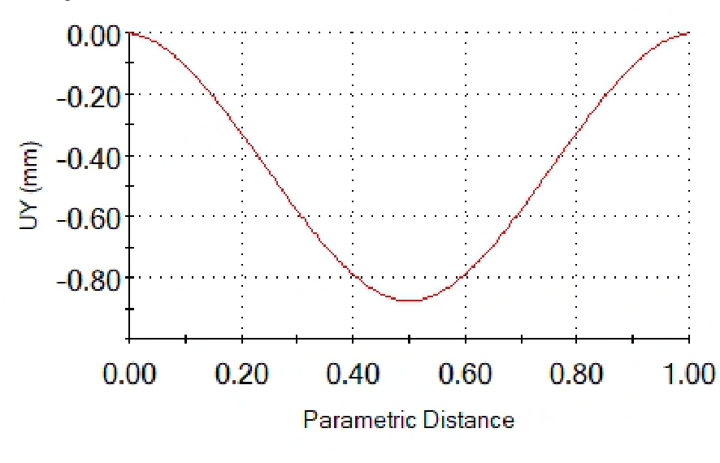
The FEA underestimated the stress, likely because the model leaves out the object's finer details. The shapes matched, but the FEA curves are smooth while our hand-drawn diagrams turn sharply - the FEA uses many nodes, while our calculation had a single load point. The main takeaway was that software isn't automatically more exact than hand calculations, and checking one against the other is what catches mistakes.
Full calculations: PDF
ME21 - Dynamics ▶
Project 1 - Slider-Crank Mechanism ▶
WITH RYDER WANT
Ryder and I analyzed the motion of a crank-driven linkage three ways: a hand-derived velocity model coded in MATLAB, a SolidWorks motion study, and video tracking of the physical mechanism.
Starting from the relative-velocity equations for the crank (AB) and connecting rod (BP), I solved for the slider's velocity in terms of the crank angle θ and rod angle φ.
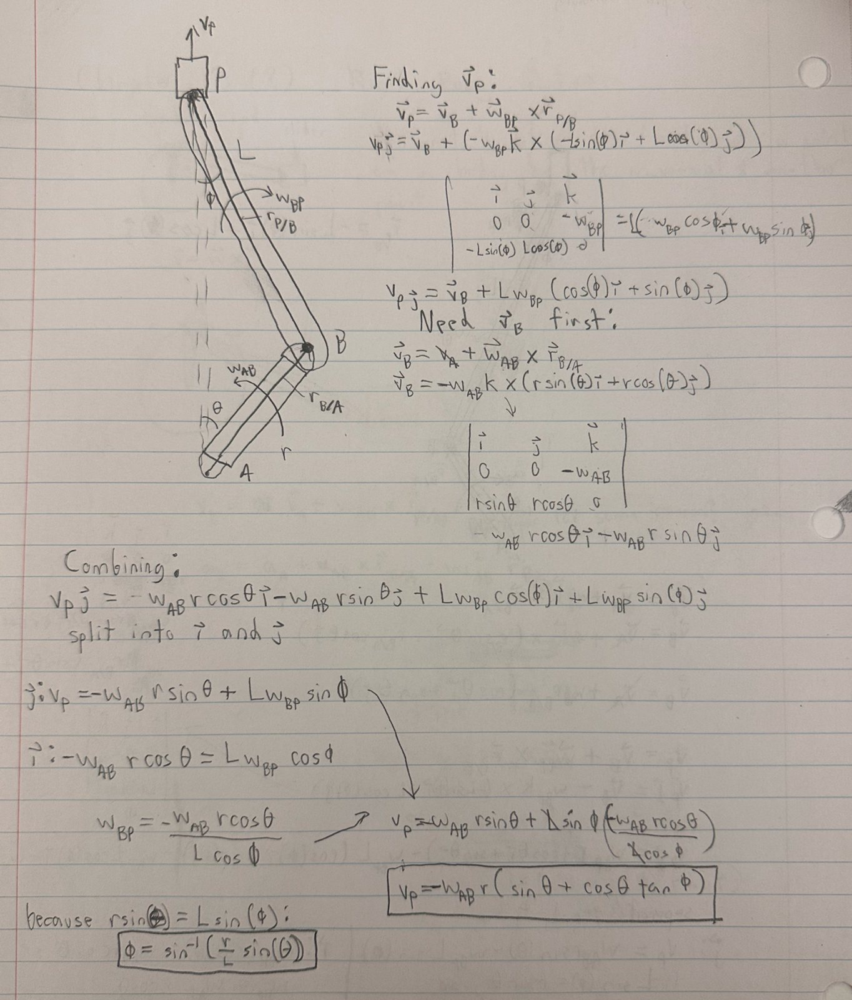
Coded in MATLAB, the analytical vertical velocity lined up closely with the SolidWorks motion study across every cycle.
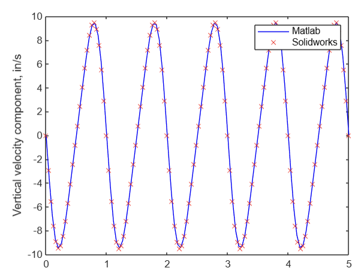
Next, we filmed the mechanism in slow motion and tracked a point frame by frame. Correcting for the 1/8-speed footage, 3 revolutions gave a speed of about 62 rpm. The tracked velocities and path were then compared with a SolidWorks motion study of the same point.
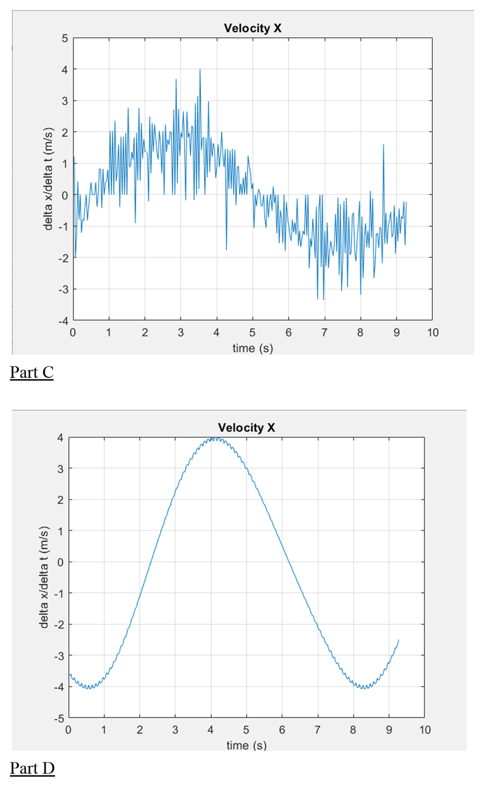
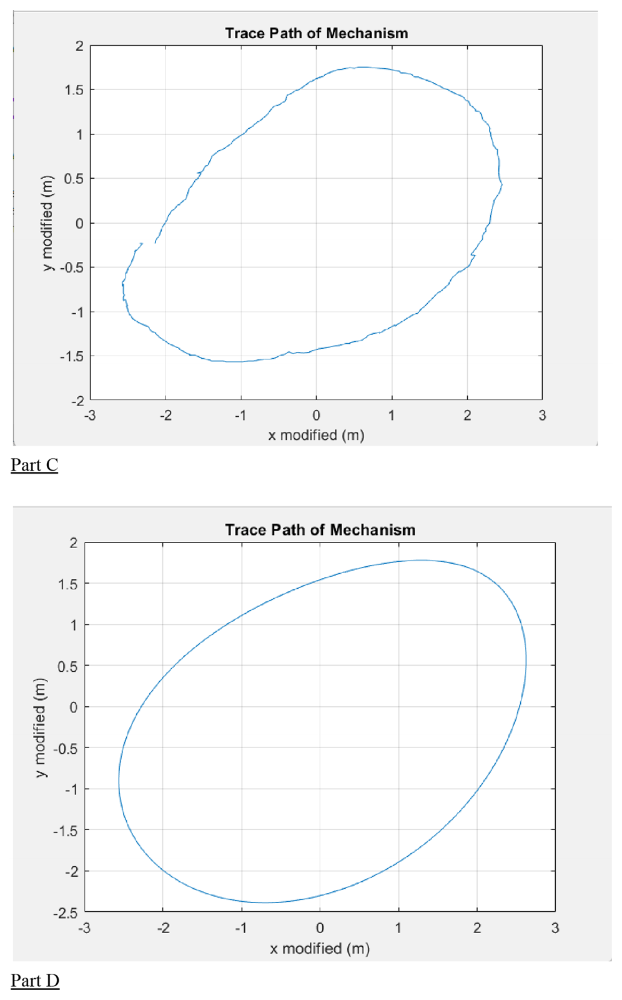
The tracker data was much noisier, because the camera was zoomed out and the tracker drew lines between slightly different points each frame. It also missed part of the bottom half of the path, leaving a small gap where SolidWorks gives an ideal, connected oval. Even so, both followed the same general motion.
Project 2 - Human Body Gait Analysis ▶
WITH AIDAN HOIDAL-BUI & BREOGHAN CONCHAS MARQUEZ
Understanding the forces and moments at the joints during walking is a first step toward designing prostheses. Using motion-capture, force-plate, and anthropometric data from a walking subject, we calculated the reaction forces and moments at the ankle, knee, and hip through one stance phase.
We modeled the leg as three rigid segments - foot, shank, and thigh - and wrote Newton-Euler equations for each. Starting from the ground reaction force at the foot, we solved the ankle's reactions first and carried them up the leg to the knee and then the hip, since each joint's result feeds the next.
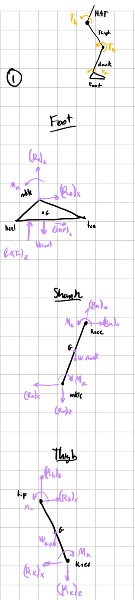
After solving a single frame by hand, we automated the calculation in MATLAB to get the joint loads over the full 0.8 s stance.
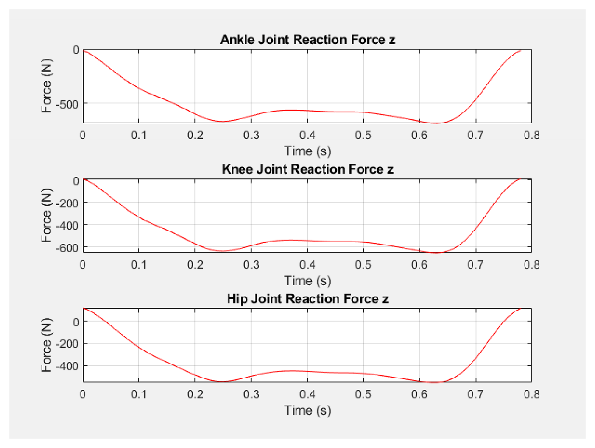
The ankle carried the largest vertical load, since it supports the shank, thigh, and the rest of the body above it. The loads peaked around terminal stance, when the heel lifts, the center of pressure shifts to the front of the foot, and one leg holds the whole body while the other swings forward. The horizontal forces were positive as the body moved forward, then turned negative as the leg pushed off.
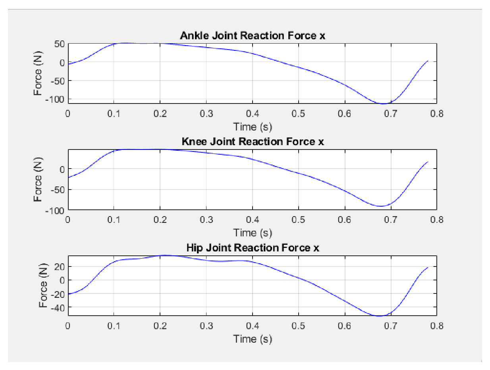
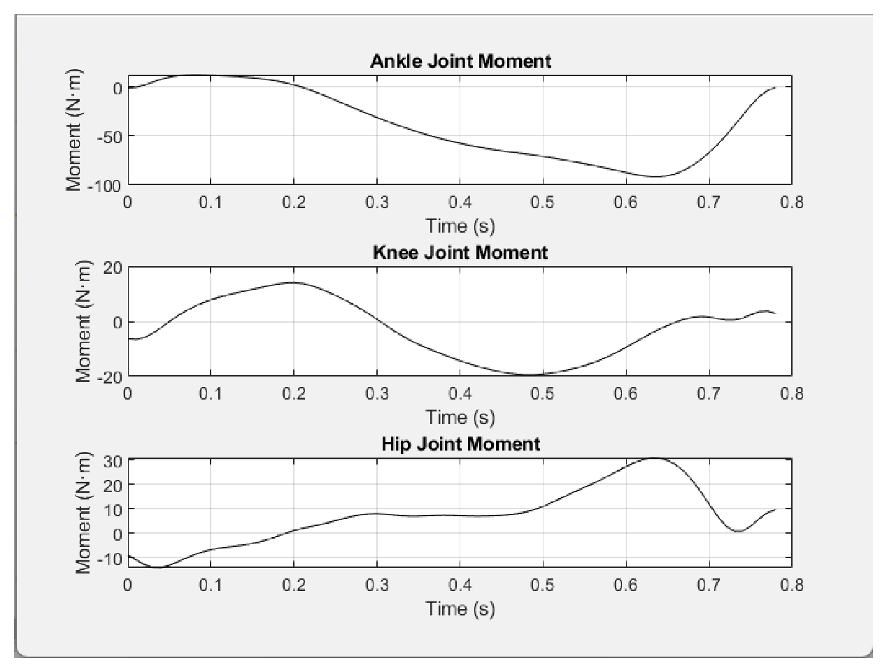
With counterclockwise taken as positive (extension), the ankle moment turned strongly negative as the stance went on, while the hip moment stayed mostly positive and smaller, since the hip doesn't carry the body's weight the way the ankle does. The knee moment swung from positive to negative and back, tracing the leg's extension, bending, and re-extension through the step.
Reports: Part A · Part B · Part C
Experiments
Lab work from thermal-fluid systems coursework.
ME51 - Thermal Fluid Systems ▶
Lab 1 - Manometer Density Measurement ▶
WITH AMANDA
Using a U-tube manometer, Amanda and I measured the density of eight household liquids with nothing but hydrostatic pressure and a camera. We filled the manometer with water, ran a test liquid down one arm, then photographed the settled fluid and used MATLAB to convert the pixel height difference into a real measurement, solving for density from the pressure balance across the tube.
Before testing liquids, we checked the physics against a known case: blocking one arm at hydrostatic equilibrium produced a 1.5 mm shift and a 14.7 Pa pressure difference; tilting the tube and blocking it again pushed that to 18.9 cm and 1853 Pa - confirming the linear relationship between column height and pressure.
| Liquid | Measured (g/cm³) | Actual (g/cm³) | Error |
|---|---|---|---|
| Olive oil | 0.948 | 0.920 | 3.04% |
| Corn oil | 0.925 | 0.922 | 0.33% |
| Lemon oil | 0.840 | 0.840 | 0% |
| Gatorade | 1.02 | 1.03 | -0.97% |
| Soy sauce | 1.06 | 1.08 | -1.85% |
| Orange juice | 0.99 | 1.05 | -5.71% |
| Milk | 0.989 | 1.02 | -3.04% |
| Hot sauce | 1.01 | 1.04 | -2.88% |
Most results landed within a few percent of published densities. The largest misses - orange juice, milk, and hot sauce - came from liquids that wouldn't settle cleanly against the meniscus, whether from opacity, suspended particles, or surface tension. Camera angle and temperature also played a part: some liquids came straight from the fridge while others sat at room temperature.
We then modeled a 1 m box of each liquid in COMSOL. Since the fluids are static, density is the only thing that changes the pressure on the wall - so the denser the liquid, the steeper the line.
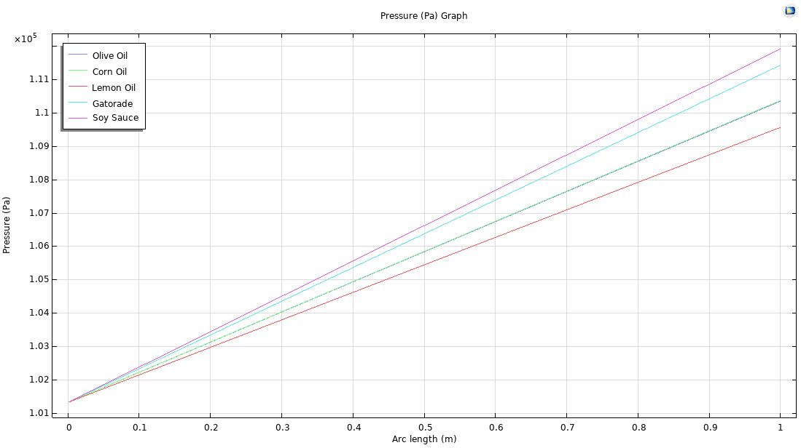
From our measured densities, we calculated the force on the wall with F = ρgh/2 (h = 1 m, the height of the COMSOL box), with about a 3% error.
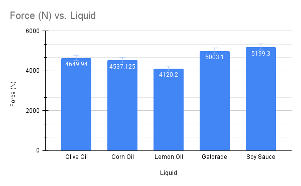
MTN1 - Force on Adhesive Tape (Scotch vs. Duct) ▶
This lab reused the manometer tube from Lab 1, but instead of leaving it open, I sealed one end with a strip of tape and measured how tall a column of water the tape's adhesive could hold before letting go - then converted that height into a hydrostatic force. Height was read the same way as before: a ruler in frame gave a pixel-to-cm calibration, and MATLAB converted a click-to-click pixel distance into a real measurement.
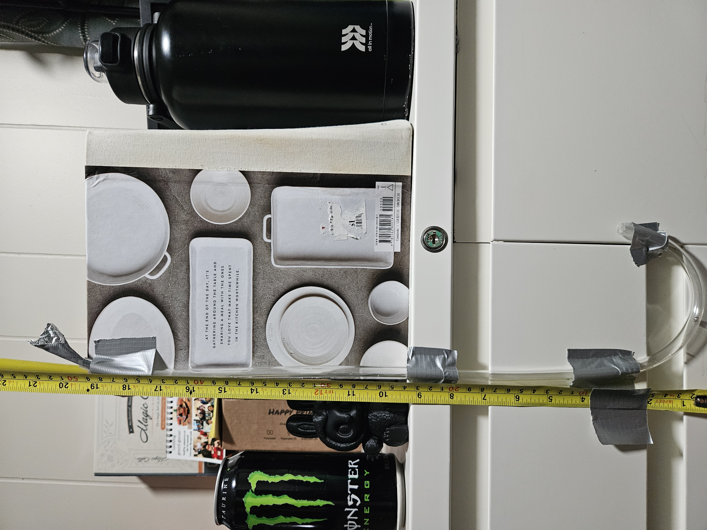
I assumed water density of 1000 kg/m³, g = 9.81 m/s², that the tape did not peel off, and used the tube's inner diameter. I ran three trials with scotch tape to check that the result stayed consistent, plus one with duct tape to see whether the stickiness of the tape mattered.
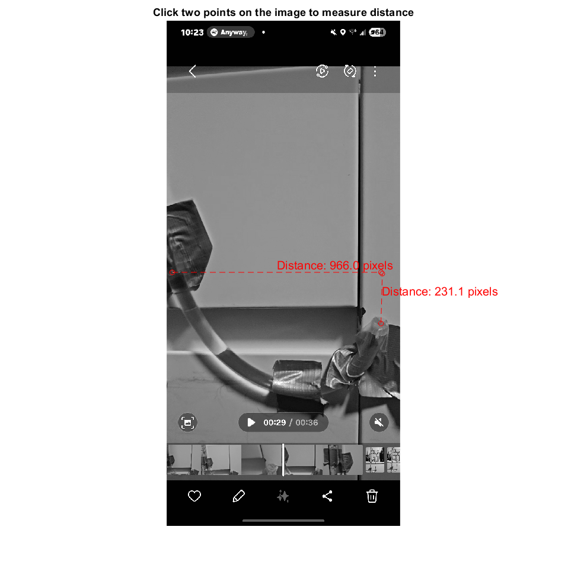
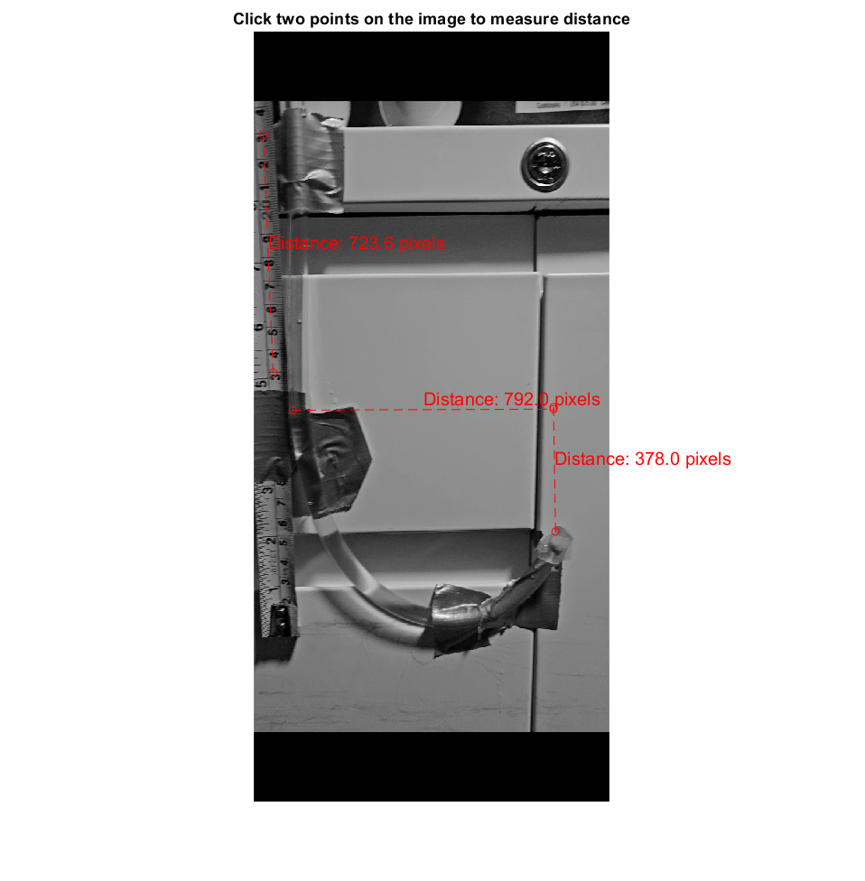
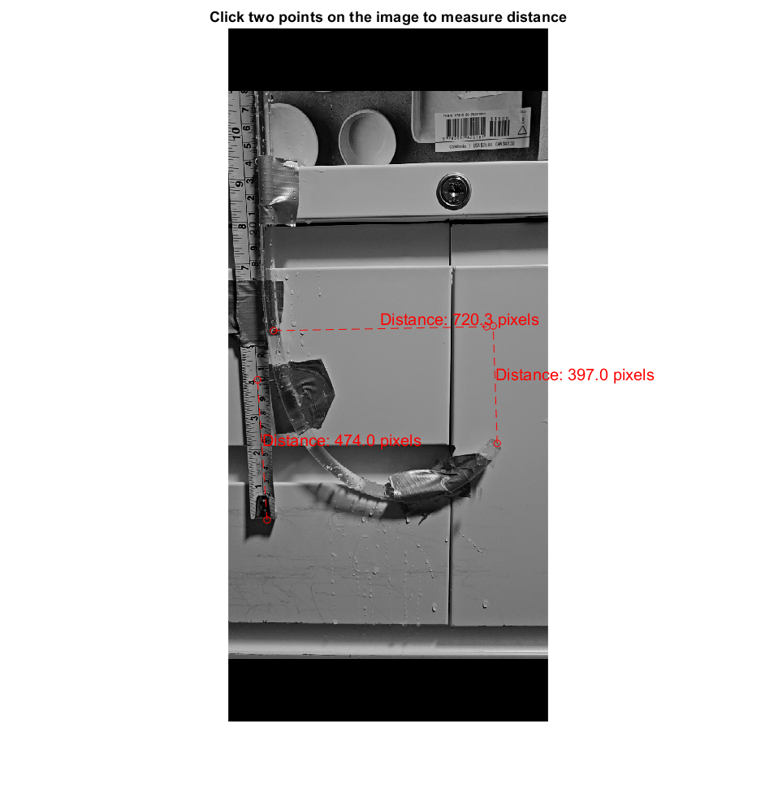
The duct tape trial used the same process and equations.
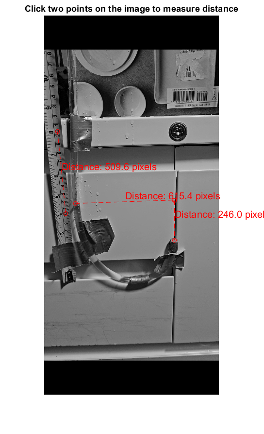
| Trial | Height (cm) | Force (N) |
|---|---|---|
| Scotch tape - Test 1 | 6.10 | - |
| Scotch tape - Test 2 | 4.76 | - |
| Scotch tape - Test 3 | 8.38 | - |
| Scotch tape - average | 6.41 | 0.018 |
| Duct tape | 5.02 | 0.014 |
For COMSOL, I modeled the scotch tape case and swept the water height over an arbitrary range. As the water rises, pressure increases, so the force on the tape grows linearly. The difference between the maximum and minimum force across the sweep is about 0.018 N, matching the calculated force. COMSOL treats the sealed end as a rigid body, though, so it doesn't account for the tape's adhesion itself. COMSOL took a while to learn, and my classmate Ryan was a huge help answering my questions.
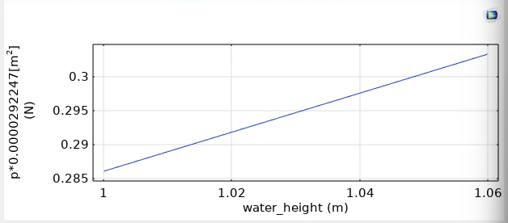
The results were unexpected. Pixel-to-cm conversion was hard to pin down, the camera angle could tilt between shots and make the water level look higher or lower, and in a few trials I didn't record, a small hole in the tape let water leak through. Next time, better camera-angle calibration would cut parallax error, and automating the height measurement would remove the human error of clicking two points by hand.
Even so, the pattern held: the three scotch-tape trials averaged a 6.41 cm column (0.018 N), while duct tape held only 5.02 cm (0.014 N) - about a 22% difference. Adhesive type didn't change the underlying hydrostatic pressure, just how much of it each tape could hold back. It was surprising that duct tape did worse, given its reputation, which may come down to how each adhesive handles contact with water. Both forces were very small and well below typical adhesive strengths for either tape.
Lab 2 - Bernoulli Jet Trajectories ▶
This lab tested how far water shoots out of holes at different heights on a bottle, using Bernoulli's equation to predict exit velocity and basic ballistics to predict landing distance. Three assumptions made Bernoulli tractable here: the flow is incompressible, steady, and inviscid.
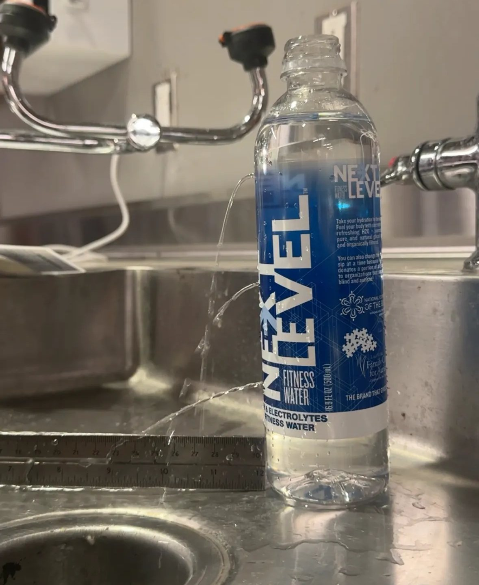
Both hole and bottle-top are open to atmosphere, so P₁ = P₂ and that term cancels. The bottle's cross-section is so much larger than the holes that, by continuity (A₁v₁ = A₂v₂), the velocity at the top is effectively zero. That leaves a clean relationship between exit velocity and the height of water above the hole:
| Height of hole | Exit velocity |
|---|---|
| 0.153 m | 1.111 m/s |
| 0.099 m | 1.514 m/s |
| 0.050 m | 1.804 m/s |
To predict how far each stream would land, I assumed the jet leaves perfectly horizontal (θ = 0), which reduces the fall time to t = √(2Δy/g) and gives a theoretical landing distance from the exit velocity alone.
| Height of hole | Experimental | Theoretical | % Error |
|---|---|---|---|
| 0.153 m | 0.30 m | 0.20 m | 33.3% |
| 0.099 m | 0.45 m | 0.21 m | 53.3% |
| 0.050 m | 0.64 m | 0.18 m | 71.9% |
The high error was the most interesting part. My best explanation: the water wasn't being replenished as it drained, so by the time each photo was taken the water level - and therefore the driving height - had already dropped well below h₀. A constantly-topped-off bottle would hold that height constant and should track the theory much more closely. The bottle's slight curvature, the curve of the sink, measuring distances from a camera, and leaving drag out of the equations likely added further error. Next time, a protractor and a camera stand would keep the angle consistent.
We also tried the same method on a cup filled to the brim and drained through a single hole. Once the water level dropped to the hole, the stream weakened. With the same assumptions and equations, the cup gave a comparable 47% error, suggesting the issue is systematic rather than a one-off.
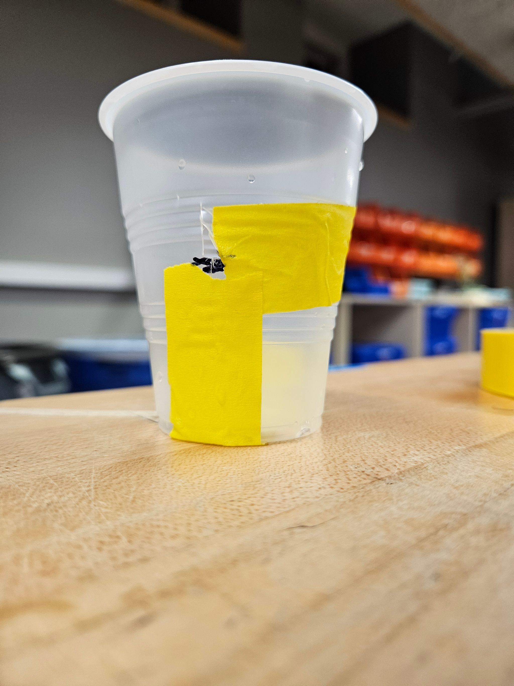
The COMSOL comparison told a cleaner story. We modeled the bottle as a rectangle (ignoring the tapered top), used turbulent k-ε flow, and kept a normal mesh so it would run in a reasonable time. The simulated exit velocities were within about 3-9% of the theoretical Bernoulli prediction - much closer than the physical experiment, since COMSOL doesn't suffer from a draining water level.
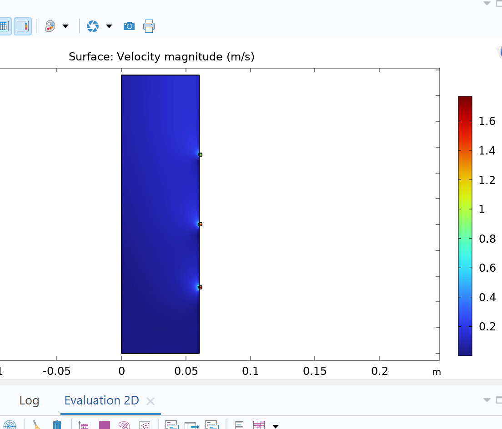
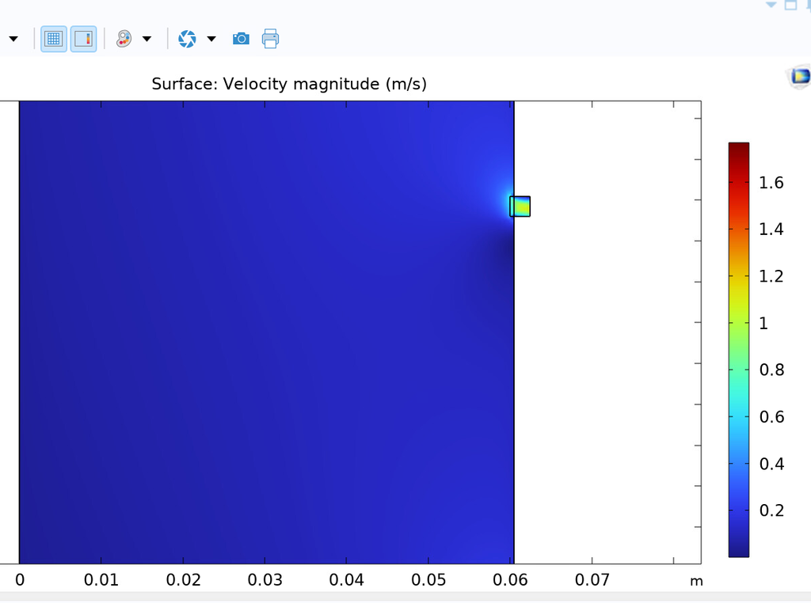
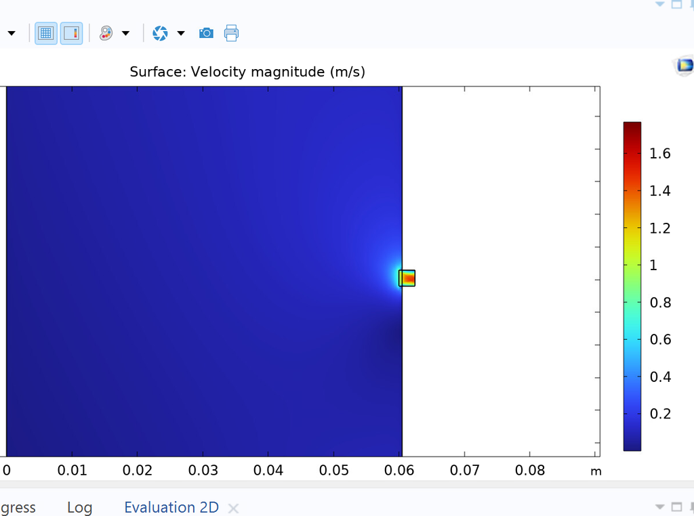
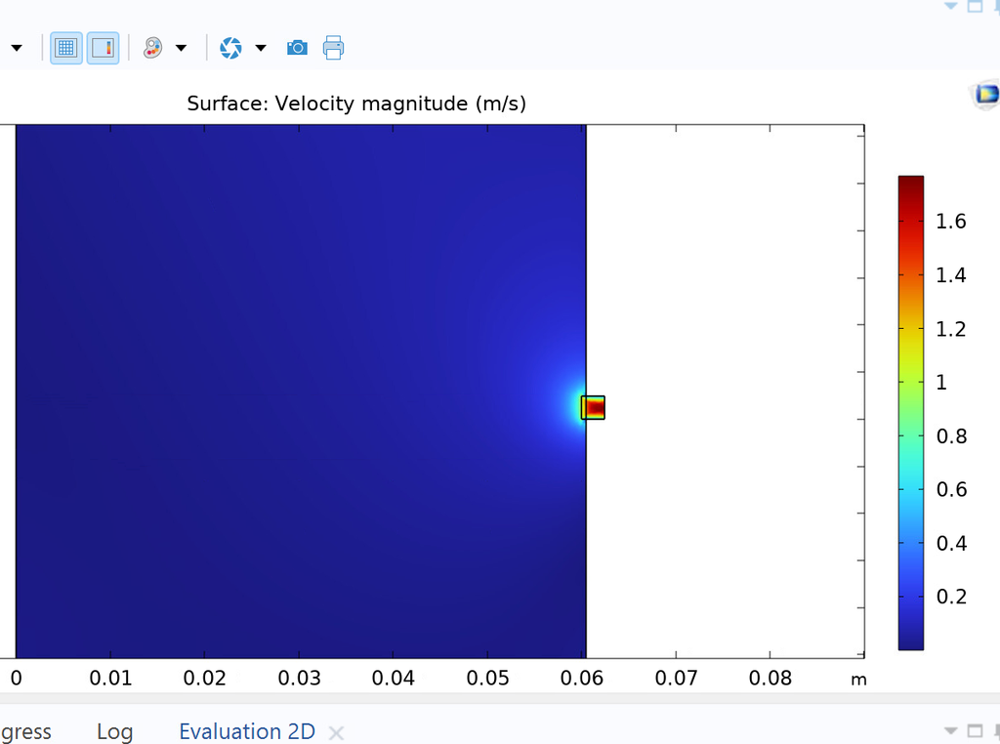
| Height of hole | Theoretical | COMSOL | % Error |
|---|---|---|---|
| 0.153 m | 1.111 m/s | 1.019 m/s | 9.08% |
| 0.099 m | 1.514 m/s | 1.401 m/s | 8.10% |
| 0.050 m | 1.804 m/s | 1.724 m/s | 2.88% |
We were also asked to think about vena contracta - the narrowest point of a jet just past the orifice, where velocity is greatest. Extending the exit holes slightly out from the bottle wall in COMSOL confirmed this: velocity peaked right where the stream first left the bottle, and (consistent with theory) the lowest hole - with the greatest driving height - produced both the fastest stream and the longest landing distance.
Overall, the theory closely matched COMSOL, confirming that the steady, incompressible, inviscid assumptions were reasonable for this setup. The experiment's much higher error came from outside factors: the falling water level, air drag, small measurement discrepancies, and the bottle's geometry.
Lab 3 - Flow Visualization & PIV ▶
This lab, with Keizo and Amanda, aimed to visualize and quantify flow velocity around an object of our choice, using dye-based flow visualization and Particle Image Velocimetry (PIV) software. We designed a "sparkle" shape in SolidWorks, laser-cut six pieces from 3 mm acrylic, epoxied them together, tied a string to the tip, and dragged it through a water-filled bin while filming from above.
Food coloring turned out to be a poor tracer. Fully dissolved dye left no visible streamlines, and powdered dye clumped and sank instead of forming a clean line. Pouring dry dye just ahead of the object worked better: streamlines and vortices appeared, and the slower run (3.1) showed less of a loop behind the object than the faster one (3.2), matching its lower Reynolds number. Pre-dissolving the dye removed the clumping, but the pour itself left the dye moving before the object arrived.
Switching to black pepper made the streamlines much easier to see and made quantitative PIV possible, using OpenPIV in Python on two frames from the video. Poor lighting made it hard for the software to tell pepper from shadow, so both frames had to be enhanced first.
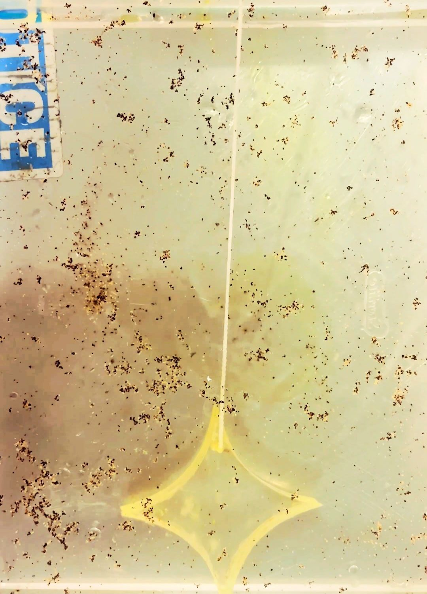
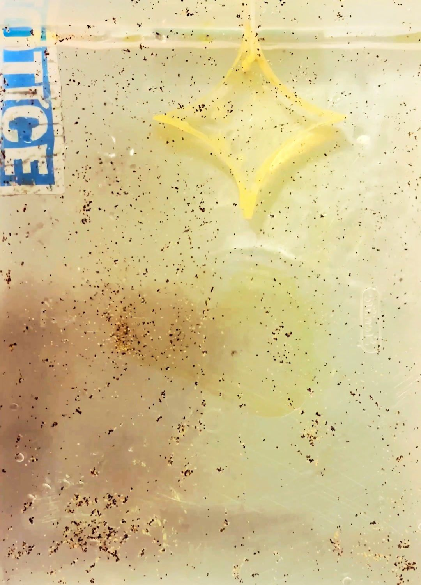
The resulting vector field looked messy from afar, since clumped pepper and poor lighting didn't help. Up close, the red vectors (the curvature of the particle paths) trace out the general streamlines, their magnitude and their direction. The blue vectors point in every direction and matter only when looking at a specific region. From the field, we extracted an average flow velocity. Our first scaling factor gave an unrealistic 0.003 m/s; converting with 3.78 pixels per millimeter gave a more reasonable 0.08 m/s.
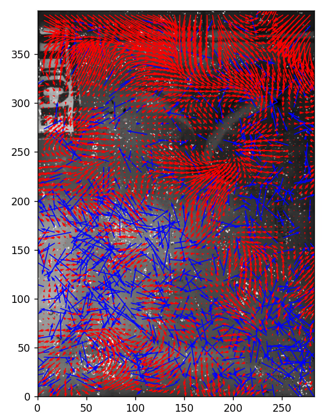
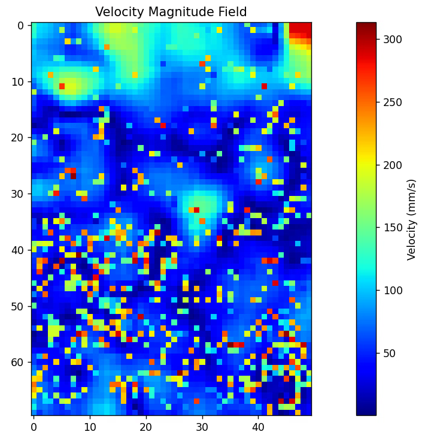
| Trial | Velocity | Re |
|---|---|---|
| Iteration 4 (dye) | 0.30 m/s | 30,000 |
| Iteration 3.1 (dye) | 0.15 m/s | 15,000 |
| Pepper (PIV) | 0.08 m/s | 8,000 |
All three trials landed well into the turbulent regime (Re > ~2,000-3,000). Since velocity is the only variable that changes Re here, reaching laminar or creeping flow with this setup would mean dragging the object at roughly 0.03 m/s or slower - slow enough that it would need a motor-driven pull rather than a hand-dragged string to hold steady.
COMSOL contour plots of the same 0.08 m/s flow in turbulent, laminar, and creeping regimes showed exactly the expected qualitative shift: turbulent flow swirled and expanded behind the object, laminar flow stayed mostly attached but rippled near the trailing edge, and creeping flow wrapped around the shape symmetrically with almost no wake - a clear visual confirmation that Reynolds number, not just speed, governs the character of the flow.
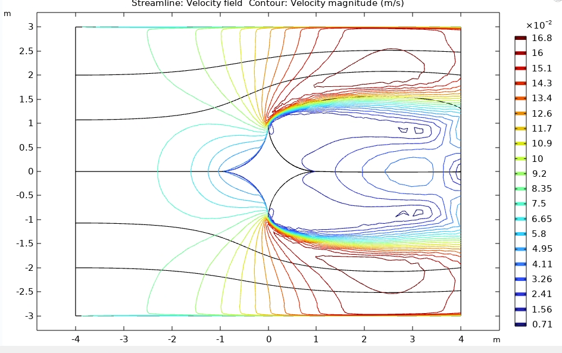
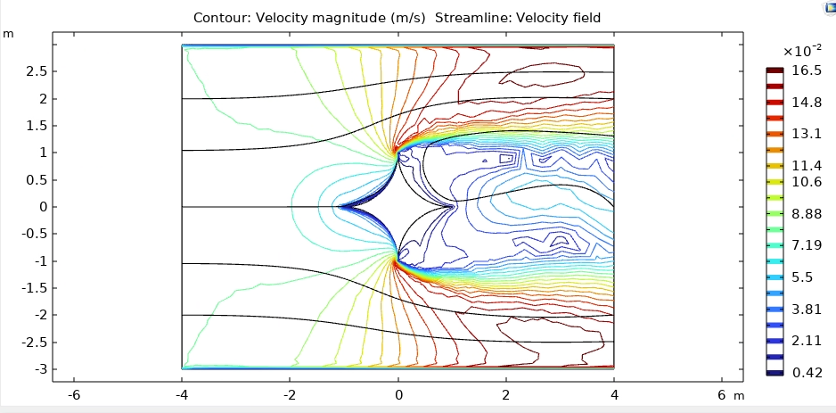
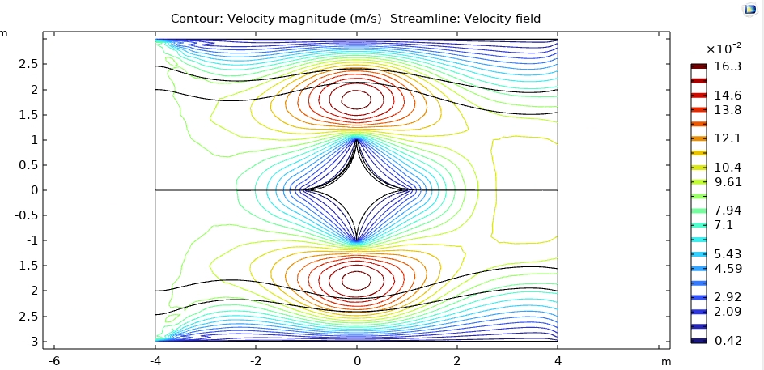
Next time: a darker dye than our bright yellow, less water so the object isn't fully submerged (the dye stayed above it instead of being displaced), and a better way to pull the object, since the string dragging through the water affected some runs.
MTN2 - Drag Coefficient of a Four-Point Star ▶
Using the same "sparkle"/star shape from Lab 3, this project estimated the drag coefficient three independent ways - dimensional analysis, potential-flow theory, and a COMSOL simulation - and compared how each captured (or missed) real flow physics. Throughout, I assumed incompressible, steady flow and a characteristic length of 2 m, larger than the lab object, since I no longer had its exact dimensions.
Dimensional analysis. With five governing variables and three fundamental dimensions, Buckingham Pi reduces the problem to two groups: C_d = f(1/Re). Since no drag-coefficient chart exists for a four-point star, I approximated it as a flat plate (sharp edges, large flat regions). Using Lab 3's 0.08 m/s, that gives Re ≈ 1.6×10⁵ - solidly turbulent - and a constant C_d ≈ 1.5 off the flat-plate chart. This assumption ignores the angle and curvature, which let flow slide along the surface and would otherwise reduce drag.
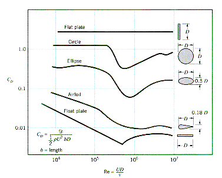
Potential-flow analysis. Getting the exact shape was hard, since the sources and sinks connected the curves, so I modeled the star as a rhombus with the middle excluded. A MATLAB source-panel method, written with AI help, modeled inviscid flow around it and gave a lower C_d ≈ 1.137. The drop from 1.5 makes sense: the angled faces smooth the pressure gradient at the leading and trailing edges relative to a flat plate - but a purely inviscid model still can't capture real separation or viscous drag, so it understates true drag.
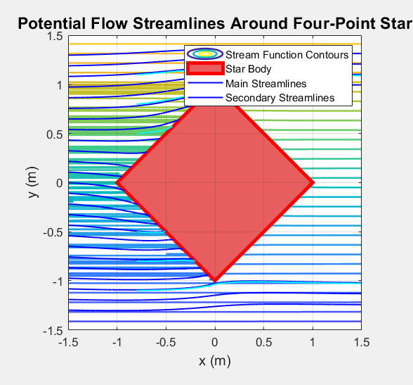
COMSOL. I modeled a curved four-point star like Lab 3's, 2 m tip to tip, in a 16 m × 16 m box. A full Navier-Stokes simulation gave the most physically grounded estimate, C_d ≈ 0.944. I computed it from the momentum difference between the outgoing and incoming flow across the domain, using U = 0.1 m/s and the 18 mm thickness. The streamlines showed clear separation and recirculation behind the star's tips, but the curvature promoted some pressure recovery, pulling the coefficient down relative to the sharper-edged analytical estimates.
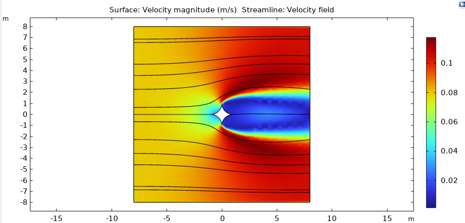
| Method | C_d |
|---|---|
| Dimensional analysis (flat-plate approx.) | 1.5 |
| Potential flow (inviscid) | 1.137 |
| COMSOL (viscous, turbulent) | 0.944 |
The three estimates form a consistent, decreasing trend as each model accounts for more real physics - geometry, then pressure distribution, then viscosity and separation. Lab 3's PIV data (Re ≈ 8,000, with visible vortices and chaotic particle motion) reinforces the story: potential flow predicts smooth, symmetric, nearly drag-free streamlines, while the real flow showed early separation at the star's sharp tips - the actual source of most of the drag, and the reason the physical estimate sits well above the inviscid prediction.
Lab 4 - Window Heat Loss ▶
This lab, with Olga, estimated heat loss through a dorm window three ways: direct thermistor measurement, an analytical resistance-network calculation, and a COMSOL simulation. Two thermistors - one indoor, one outdoor - were soldered up, taped to the window, and wired to a KB2040 microcontroller running MicroPython (after the RP2040 proved unreliable), using the Steinhart-Hart equation to convert resistance readings into temperature. Each test logged data to a CSV file for about 18 minutes.
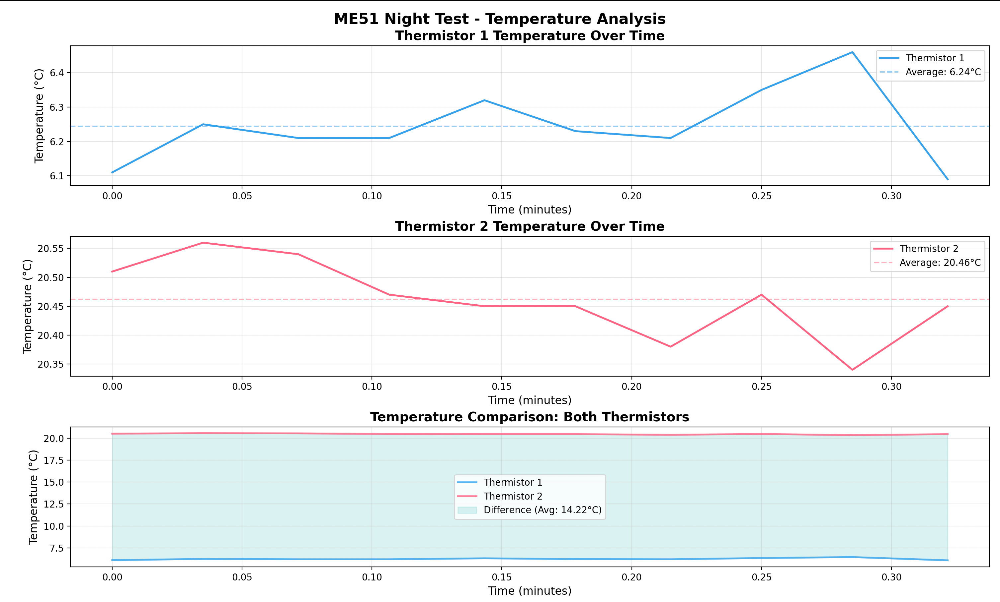
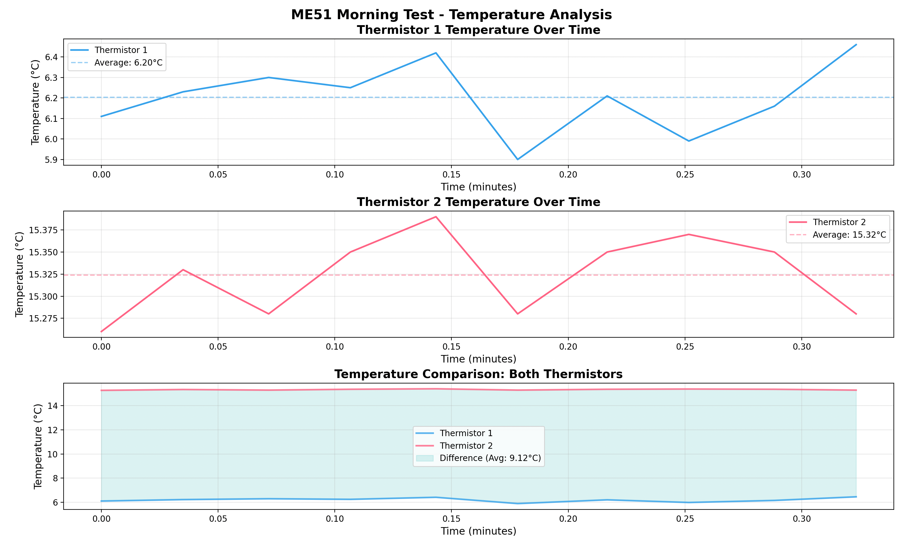
| Test | Outdoor avg. | Indoor avg. | ΔT |
|---|---|---|---|
| Night (22:50-23:05) | 6.28 °C | 18.07 °C | 11.79 °C |
| Morning | 6.41 °C | 15.39 °C | 8.98 °C |
With h_in = 4 W/m²K (still indoor air), h_out = 25 W/m²K (moderate wind), and single-pane glass (k = 0.96 W/mK, 4 mm thick), R_total came out to 0.294 m²K/W - dominated almost entirely by the indoor convective resistance, which is why improving indoor air circulation matters more than outdoor insulation for a window like this.
Radiation turned out to matter more than expected: using the night-test temperatures, q_rad ≈ 56 W/m² against q_conv ≈ 40.1 W/m² - radiation was actually the larger loss term. Folding an effective radiative coefficient (h_rad ≈ 5 W/m²K) into h_in dropped R_total to 0.155 m²K/W and raised the predicted flux to 76.1 W/m².
| Source | q (W/m²) |
|---|---|
| Analytical (night, with radiation) | 76.1 |
| COMSOL simulation | 76.554 |
| Analytical (morning) | 57.9 |
The COMSOL model was a 0.9 × 1.2 m window of silica glass (k = 1.38 W/mK). Holding one side's convection coefficient constant, we swept the indoor coefficient from 5 to 20 W/m²K (for ventilation) and the outdoor one from 10 to 60 W/m²K (for wind). Heat transfer rose with h but not linearly, and changing the outdoor side mattered less than changing the indoor side.
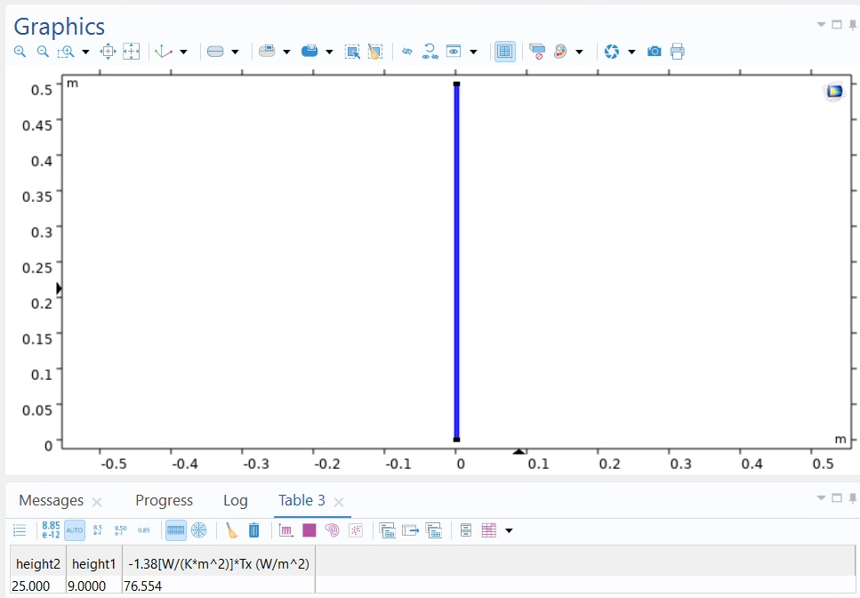
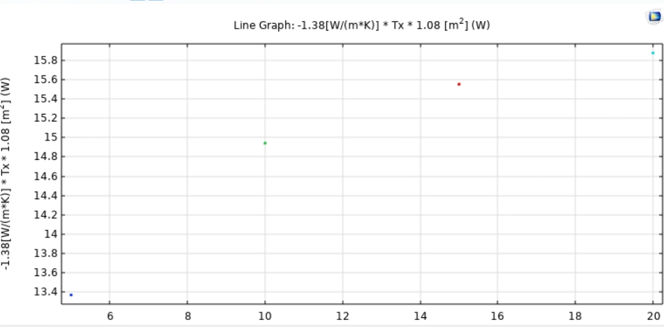
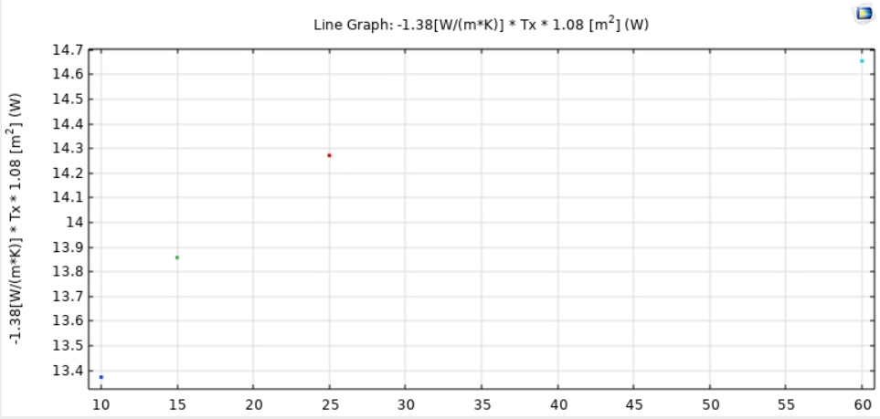
The night-test analytical value and the COMSOL result agreed almost exactly, suggesting the assumed boundary conditions closely matched actual nighttime steady-state behavior. The morning value came in lower, which tracks - daytime solar heating, shifting wind, and a rising outdoor temperature all reduce net heat loss and pull conditions away from what COMSOL assumed.
Scaling the nighttime flux to a full night (U = 6.45 W/m²K over 12 hours) gave a total estimated loss of about 0.91 kWh through this one window - though that assumes a constant ΔT, which held much better in the morning data (14% variation) than overnight (38% variation, likely from the heating system cycling).
The thermistors themselves introduced real limitations: nonlinear resistance-to-temperature behavior (relying on the simplified Steinhart-Hart form), slight self-heating from the measurement current, sensitivity to how tightly each sensor was taped to its surface, and ordinary unit-to-unit drift. None of these invalidate the results, but they explain why the measurements don't match the models perfectly.
Lab 5 - Cooling Curve of a Water Cup ▶
This lab modeled the cooling rate of a hot liquid (water standing in for coffee) using the lumped-capacitance assumption, then checked that assumption experimentally, analytically, and in COMSOL. Three thermistors - top-center, top-side, and bottom-side - tracked temperature at once, positioned to catch any top-to-bottom or center-to-wall gradient that would violate the "lumped" (single-node) assumption. A Raspberry Pi Pico W read all three through its separate ADCs, reusing the Steinhart-Hart calibration from Lab 4, with a popsicle stick across the cup holding the center sensor.
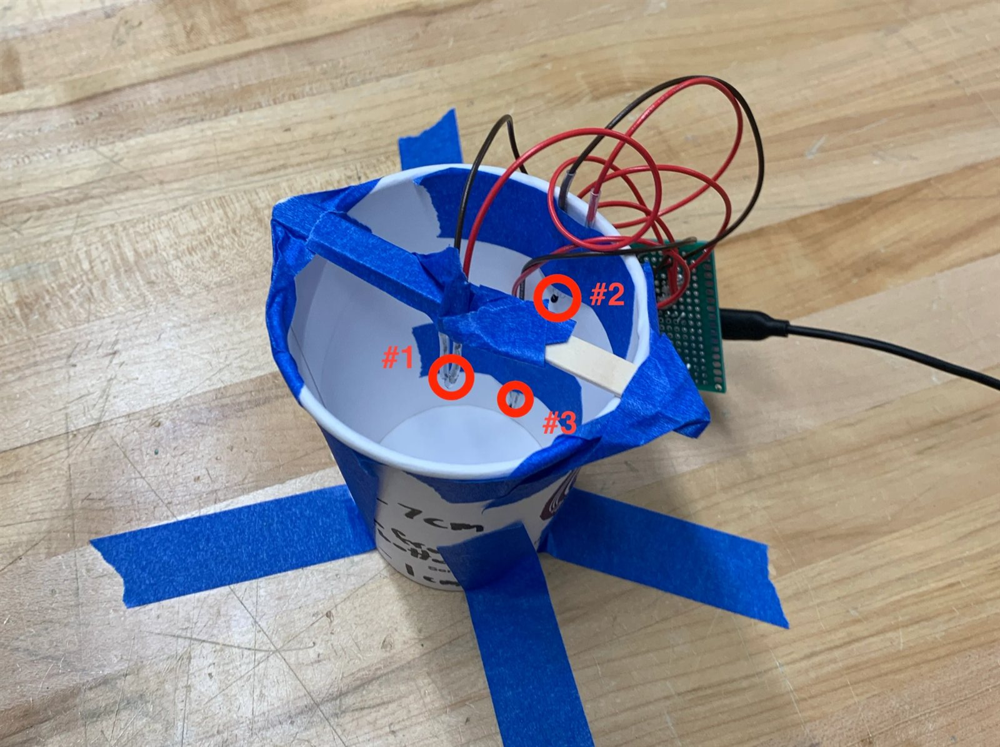
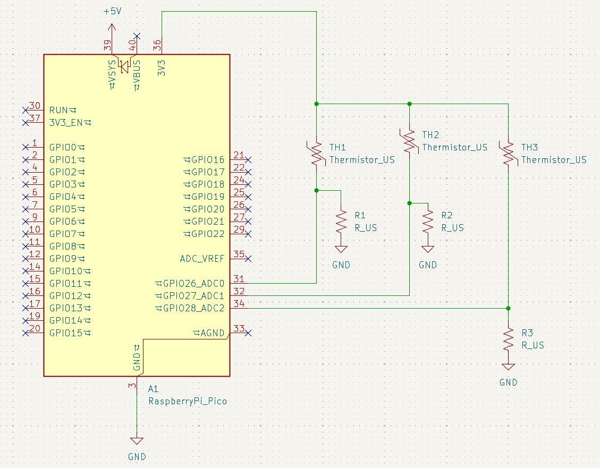
All three sensors tracked each other within a few tenths of a degree throughout the cooldown, which was the key experimental result: the water really does behave as a single thermal node, despite a computed Biot number of 0.2 - technically outside the usual Bi < 0.1 rule of thumb for a valid lumped analysis.
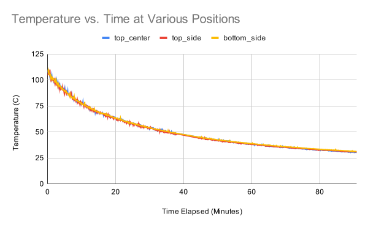
Fitting the exponential decay of θ(t) = T − T_∞ gave an effective convective coefficient of h ≈ 24.3 W/m²K and an effective resistance R ≈ 1.87 K/W directly from the data - useful as a benchmark for the analytical and numerical models that followed.
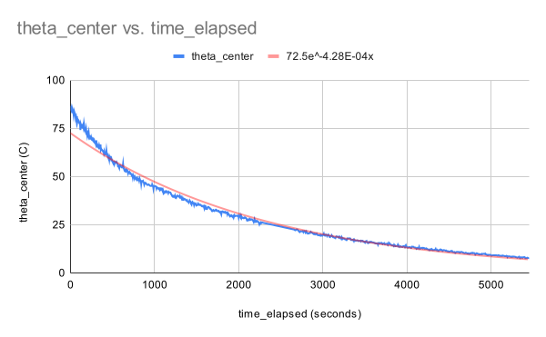
A resistance-network model of the cup (treating it as a truncated cone, water-to-cup-to-air on the sides, ignoring the insulated bottom) with textbook convection values (h_water = 500, h_air = 10 W/m²K) gave R_total = 4.76 K/W - more than double the experimental value. A MATLAB Euler's-method simulation using these same assumptions badly under-predicted the cooling rate, and adding a radiation term barely changed the result.
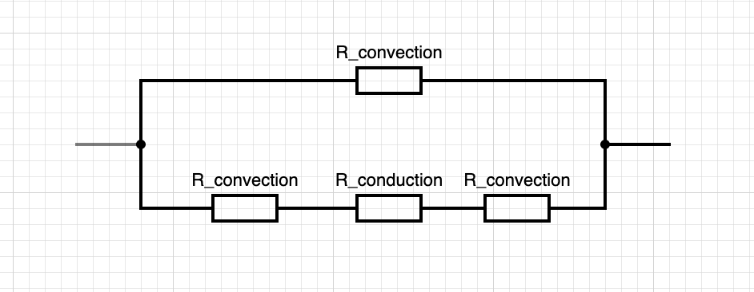
The fix turned out to be h_air itself: raising it to 25 W/m²K (from the textbook 10) brought R_total down to 2.03 K/W, much closer to experiment - implying the "extra" cooling in the real system came from effects the simple model doesn't capture (air-gap conduction, table contact, minor water disturbance) all folding into an inflated effective h.
COMSOL runs told the same story in three steps, leaving out conduction and radiation and insulating the bottom of the cup. With h = 5 W/m²K on both water and air surfaces, the simulated cup stalled at 313 K - 3.3% off in temperature but over 1,300% too slow in time. Raising h to 50 W/m²K everywhere got temperature within 0.3% and time within 26%. Splitting the walls (70 W/m²K) from the top surface (50 W/m²K) tightened both errors to under 1%.
The takeaway: an "effective" h ends up far higher than natural convection because it absorbs every effect the model leaves out, and the cup's cooling depends heavily on what you assume for h.
MTN3 - Heat Transfer Through a Running Jacket ▶
This project measured heat transfer through a jacket while standing still versus running, comparing thermistor data against an analytical thermal-resistance model and a matching COMSOL simulation - then used the same run to estimate aerodynamic drag on a moving person.
Two thermistors, one on the inner layer of the jacket and one on the outer, sat in voltage dividers with 10 kΩ resistors feeding the analog inputs of a KB2040. CircuitPython converted the readings to temperature with the thermistor's Beta relation and streamed them to my laptop, which I carried outside at night, with snow on the ground. As a sanity check, the thermistors read room temperature within about 1 °F of a thermometer.
The model assumed steady, one-dimensional heat flow, uniform surface temperatures, constant convection coefficients, perfect contact between layers, and no radiation.
With T_in = 35 °C (skin/clothing interface), T_∞ = 0.56 °C, jacket thickness L = 5 mm and k = 0.040 W/mK, and outside convection rising from h = 8 W/m²K (still) to 30 W/m²K (running), the model predicted heat flux would increase while running:
| Condition | Analytical | COMSOL | Experimental |
|---|---|---|---|
| Standing still | 76.5 W/m² | 76.5 W/m² | 214.4 W/m² |
| Running | 96.1 W/m² | 96.1 W/m² | 188 W/m² |
COMSOL validated the analytical model almost exactly in both cases - but the thermistor data, from a single run, told a different story on two fronts: measured flux was far higher than either model predicted, and it dropped while running instead of rising. The outer surface did cool more while running, matching the model's qualitative trend, but running clearly changes more than just h_out - likely air gaps, insulation contact, and exposure shifting all at once, which a single-layer 1-D model can't separate out.
Using the run itself (≈160.9 m down Bellevue St in 55.2 s, or 2.9 m/s) as a stand-in for wind speed on the runner's body gave a drag-force estimate:
A few newtons is the right order of magnitude for aerodynamic drag at an easy running pace, and since drag scales with V², it should grow quickly at higher speeds. Modeling the body as a rectangular bluff body, the flow separates sharply at the front corners, producing the low-pressure wake that accounts for most of that drag.
Overall, a simple 1-D model captures the trends in jacket heat loss but not the real magnitude. Predicting heat loss through clothing needs changing material properties and boundary conditions, and combining analytical, numerical, and experimental approaches gave a fuller picture than any one alone.
Experience & Research
BEST Scholar Peer Mentor
Tufts University, Medford, MA
- Mentored 12 incoming pre-matriculated students through an academic and social transition program.
- Organized events and guest presentations, and ran hands-on engineering workshops to help students explore majors.
- Built an inclusive, growth-oriented environment for students from diverse backgrounds.
IDEA Lab - Member
Tufts University, Medford, MA
- Helped stand up a new research group studying transboundary water-basin pollution.
- Took part in strategy discussions to define the group's goals, priorities, and action plans.
- Drafted interview questions to guide data collection and keep it relevant and accurate.
Library Assistant
Parlin Memorial Library, Everett, MA
- Ran library programs for children ages 5-10.
- Helped patrons find resources and services, and kept materials organized on the floor.
- Checked materials in and out through the library management system.
Skills
Programming
- MATLAB Certified
- Python
- Java
CAD & Simulation
- SolidWorks
- SolidWorks Simulation
- Onshape
Fabrication
- 3D printing
- Laser cutting
- Sand casting
Languages
- English Fluent
- Spanish Native
- German A1
Education
Tufts University
EXPECTED MAY 2027B.S. Mechanical Engineering, Physics Minor - GPA 3.54, Medford, MA
University of Tübingen
MAY-JUN 2024Tufts Abroad Program - Tübingen, Germany